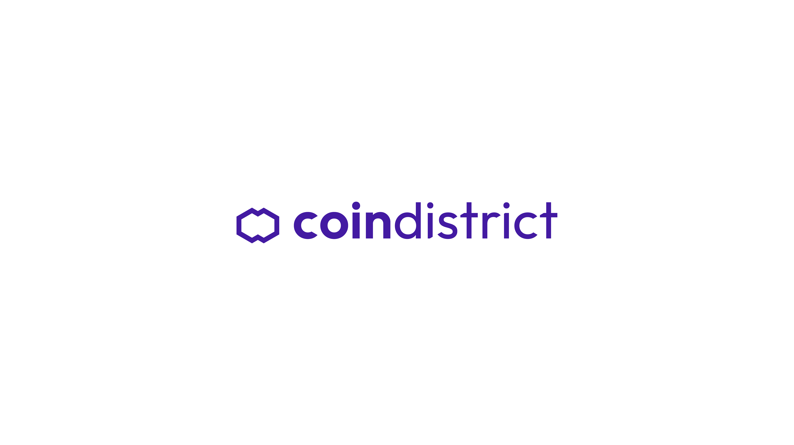
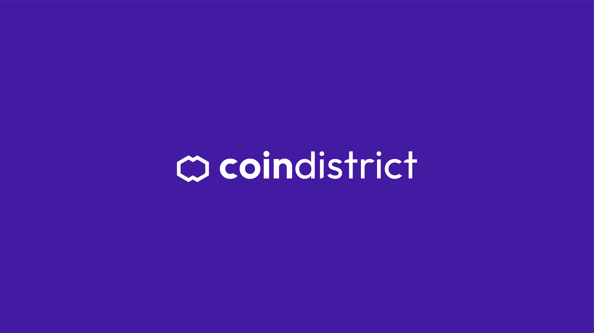
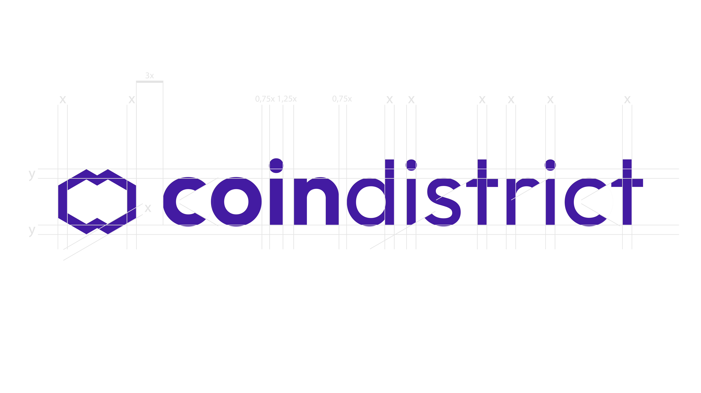
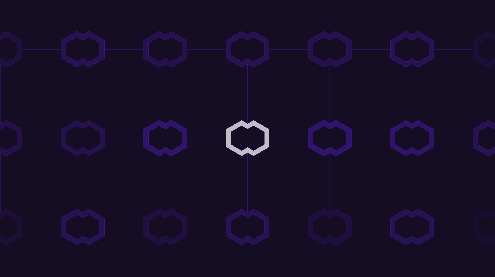
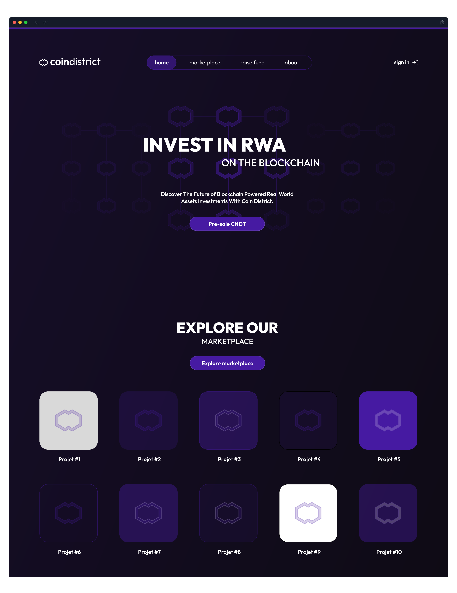
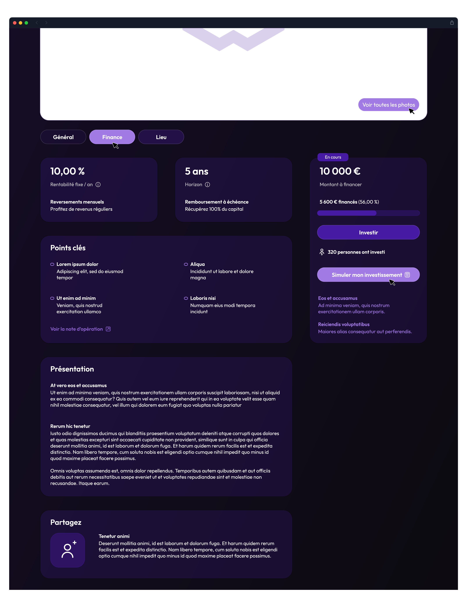
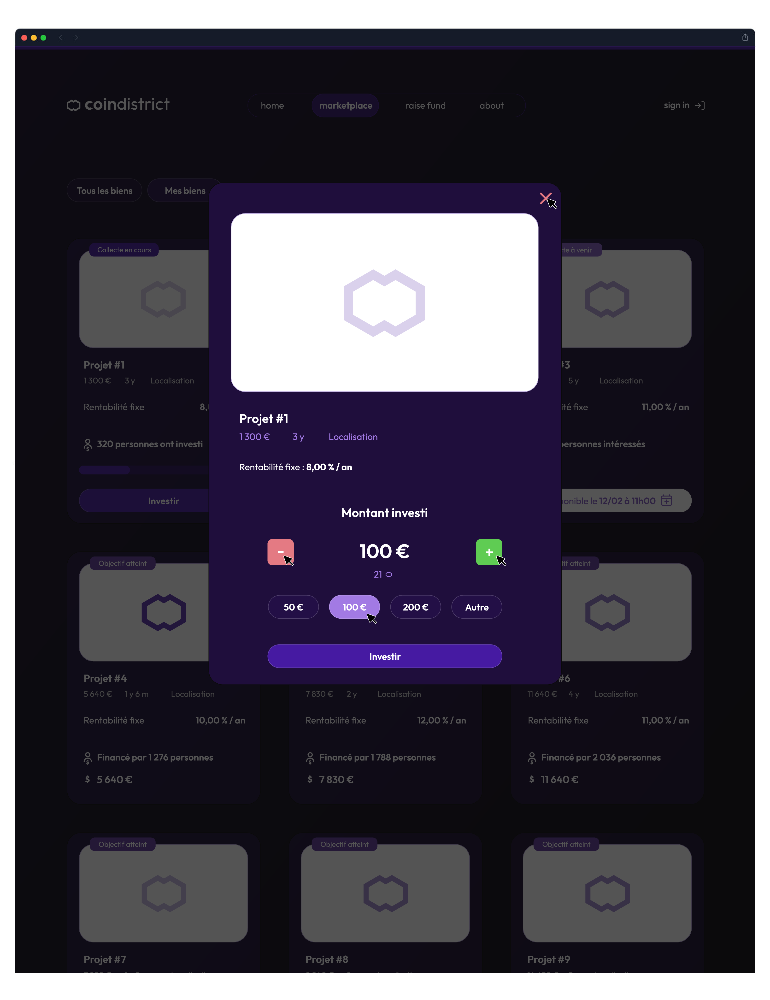
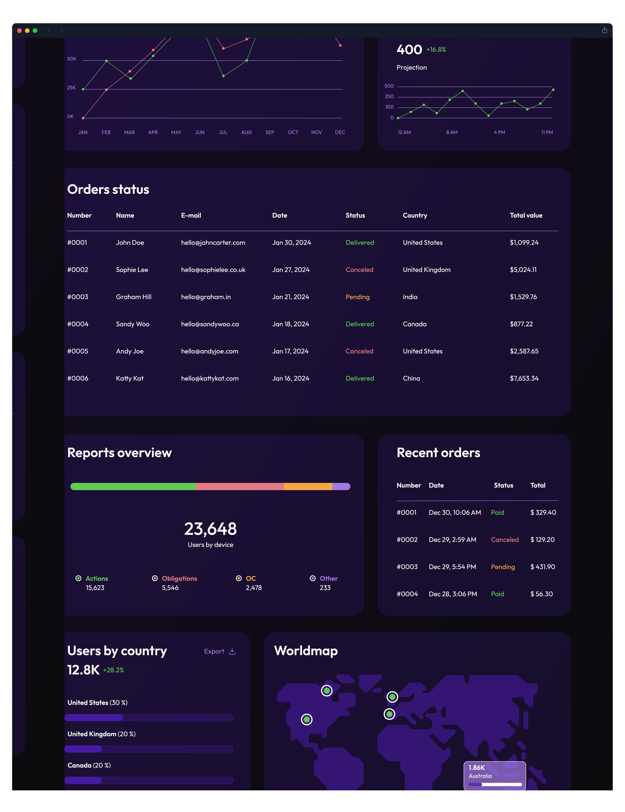

CoinDistrict — Identité Visuelle & Webdesign UI/UX
Coin District se consacre à rendre les investissements en capital-investissement accessibles et flexibles grâce à la technologie blockchain. Création du logo et du webdesign complet du site coindistrict.io.
Logotype & Identité de Marque
J'ai pensé le logo Coin District avec le C et le D en tête pour former un maillon de la chaîne de blocs (Blockchain : une technologie décentralisée de stockage et de transmission d'informations, prenant la forme d'une base de données sécurisée).




Webdesign UI/UX - Site Internet
Travail UI/UX sur l'ensemble des 23 pages du site coindistrict.io. Le but était de rendre le plus digeste possible la grande quantité d'informations, de chiffres, de tableaux et de graphiques financiers qui se trouvent dans la version finale. Ci-dessous, découvrez quelques exemples d'écrans.
Cliquez pour ouvrir le fichier PDF complet (23 écrans, 10,3 Mo).




Webdesign UI/UX - Dashboard
Conception d'un tableau de bord (Dashboard) en accord graphique transparent pour suivre en temps réel l'ensemble de ses investissements crypto et blockchain.

Cliquez pour ouvrir le fichier PDF (1 écran).
